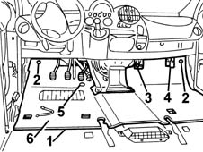

7040L17 passenger compartment floor front carpet - r r
- Path
- Procedures > 70 FITTINGS > 7040 BODYSHELL INTERIOR TRIMS AND FITTINGS > 7040L CABIN FLOOR COVERING > 7040L17 passenger compartment floor front carpet - r r
- Kind
- repair procedure (removal / refitting; the operation number is the code)
- Applies to
- all engines; all production periods
- Interactive page
- https://sloeber94.github.io/elrnDB-fMltpl/en/#/2892209
Applies to: all engines; all production periods
 Removing
Removing
 Refitting
Refitting7045A10 l/h or r/h front seat (one) - r+r (right and left)
7045A02 central front seat - r r
3380A44 handbrake/linkage protection - r+r
7040L40 REAR COMPARTMENT SCUFF STRIP - R R (right and left)
7040L42 sill plate connection of one front door (1), lh or rh - r r (right and left)
1. Detach the Velcro from the rear carpet.
2. Undo the retaining buttons.
3. Undo the heater/air conditioner bottom bolt.
4. Slacken the bracket.
5. Undo the accelerator end-of-travel support.
6. Remove the front carpet.

Applies to: all engines; all production periods
Refitting
RemovingCheck that the carpet is undamaged.
Position the carpet.
Tighten the accelerator end-of-travel support.
Secure the bracket.
Tighten the heater/air conditioner bottom bolt.
Tighten the retaining buttons.
Join the Velcro to the rear carpet.
7040L42 sill plate connection of one front door (1), lh or rh - r r (right and left)
7040L40 REAR COMPARTMENT SCUFF STRIP - R R (right and left)
3380A44 handbrake/linkage protection - r+r
7045A02 central front seat - r r
7045A10 l/h or r/h front seat (one) - r+r (right and left)
Topics linked from this page (6)
- 3380A44 handbrake/linkage protection - r+r
- 7040L20 tunnel trim - r r
- 7040L40 REAR COMPARTMENT SCUFF STRIP - R R
- 7040L42 sill plate connection of one front door (1), lh or rh - r r
- 7045A02 central front seat - r r
- 7045A10 l/h or r/h front seat (one) - r+r